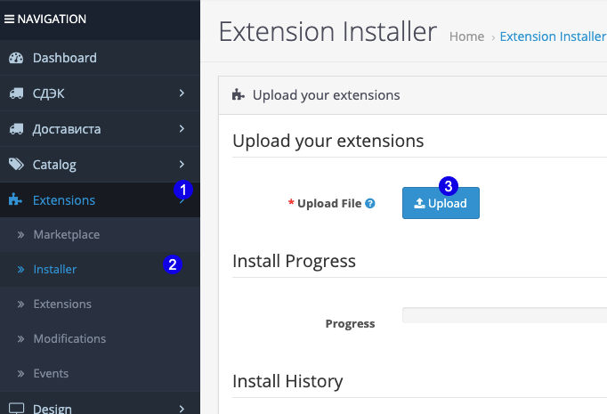
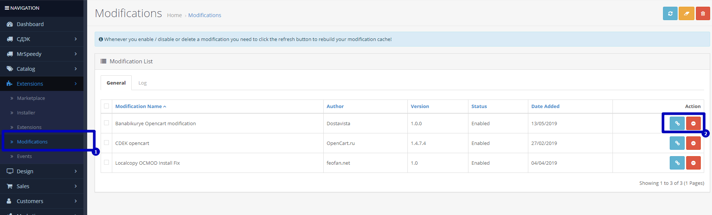
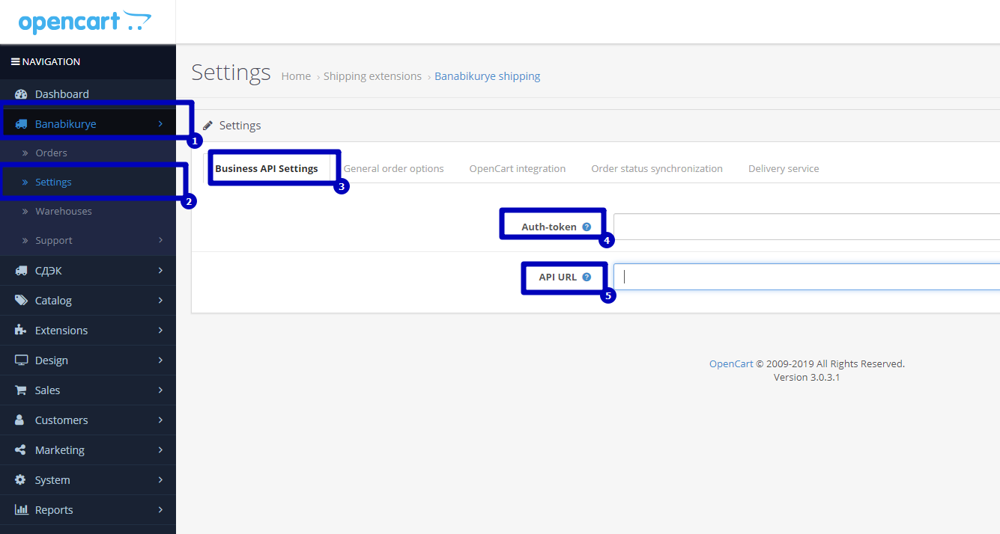
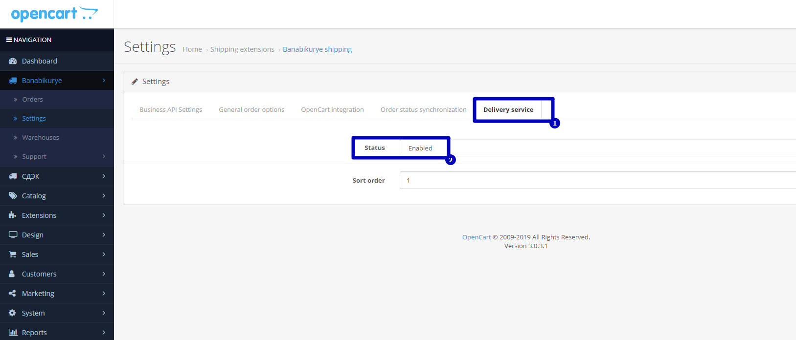
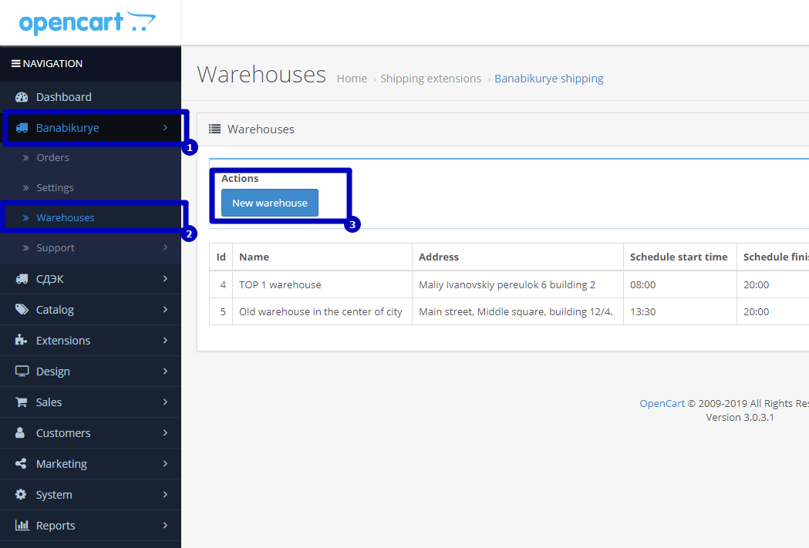
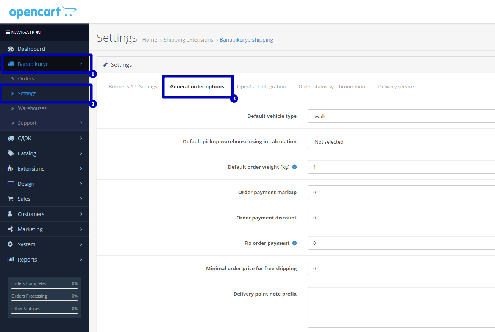
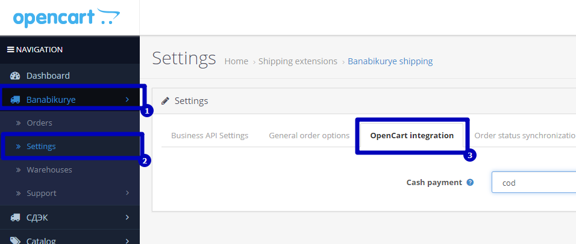
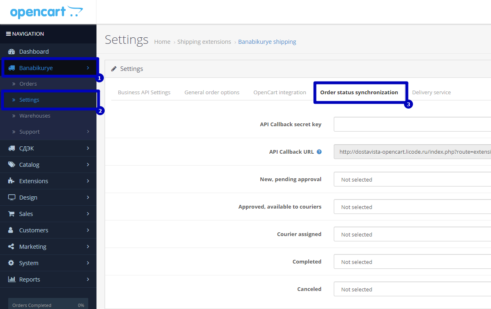

OpenCart
OpenCart siparişlerinizi BBK'ya aktarın.
OpenCart yönetim panelinde modülü yükleyin, token bilgilerinizi girin ve teslimat ayarlarınızı aktif hale getirin.
-
Modül dosyalarını yükleyin
OpenCart yönetim panelinde Extensions ve Installer alanına gidin. Önce teslimat modülünü, ardından eklenti dosyasını yükleyin.

Önce teslimat modülünü, ardından eklenti dosyasını yükleyin. -
Modification ayarını aktif edin
Modifications bölümünde BBK OpenCart modification seçeneğini seçin ve yeşil butonla aktif hale getirin. Ardından Extensions altında teslimat paketlerini de aktifleştirin.

Modification aktif olduğunda teslimat paketleri kullanılabilir hale gelir. -
Business API bilgilerini girin
BBK menüsünden Settings ve Business API settings alanına giderek token ve URL bilgilerini doldurun.
- Sol menüden Banabikurye alanına girin.
- Settings ve Business API settings bölümünü açın.
- Token ve URL alanlarını doldurun.
- Token almak için BBK destek ekibine OpenCart 3.x entegrasyonu talebiyle ulaşın.
- Üye girişi bilgilerinizi veya telefon numaranızı paylaşmanız gerekebilir.

Token ve URL bilgileri OpenCart mağazanızı BBK hesabınıza bağlar. -
Delivery service ayarını açın
Delivery service sayfasında entegrasyonu Enabled olarak işaretleyin.

Delivery service aktif edildiğinde BBK teslimat seçeneği devreye girer. -
Depo bilgilerinizi ekleyin
Warehouse adresi, açılış saati, iletişim adı, telefon numarası ve kurye notu gibi bilgileri tamamlayın.
- Name: Paket seçenekleri içinde görünecek depo adı.
- Warehouse address: Kuryenin gönderiyi teslim alacağı adres.
- Depo açılış saati
- İletişim adı ve soyadı
- İletişim telefon numarası
- Kurye için yorum veya teslim alma notu

Warehouses bölümünden yeni çıkış noktası oluşturun. 
Depo bilgileri kurye teslim alma noktasını belirler. -
Genel gönderi seçeneklerini düzenleyin
Araç tipi, varsayılan depo, ağırlık, komisyon, indirim, sabit fiyat ve ücretsiz teslimat eşiğini ayarlayın.
- Varsayılan araç tipi: Motor veya araba gibi tercih ettiğiniz araç tipini seçin.
- Varsayılan depo: Fiyat hesaplamasında kullanılacak çıkış noktasıdır.
- Varsayılan gönderi ağırlığı: Siparişte ağırlık girilmezse bu değer kullanılır.
- Komisyon tutarı: Teslimat bedeline eklemek istediğiniz hizmet bedelidir.
- Sipariş teslimat indirimi: Müşteriye indirimli teslimat sunmak için kullanılır.
- Sabit gönderi bedeli: Her sipariş için geçerli olacak sabit teslimat fiyatıdır.
- Ücretsiz teslimat eşiği: Belirli sepet tutarı üzerindeki teslimat bedelini 0 TL gösterebilirsiniz.
- Teslimat noktası notu: Kurye adrese varmadan arama gibi özel notlar eklenebilir.
- Beyan edilen değer: Gönderiyi güvence altına almak için kullanılır.
- Çıkış noktasında satın alma: Kurye, gönderiyi teslim alırken ödeme yapabilir.
- Gönderi ağırlık birimi: Kurye gönderi detayında ağırlık bilgisini görebilir.

Genel seçenekler sipariş fiyatlama ve teslimat davranışını belirler. -
Nakit ödeme seçeneğini ayarlayın
Nakit ödemeli sipariş oluşturulduğunda sipariş otomatik olarak kapıda ödemeli şekilde oluşturulabilir.

Nakit ödeme ayarı sipariş ödeme davranışını belirler. -
API Callback ayarını tamamlayın
API Callback URL alanındaki linki BBK destek ekibine gönderin. Gelen cevaptaki anahtarı API Callback secret key alanına girerek gönderilerinizi Banabikurye ve OpenCart arasında bağlayın.

Callback ayarı gönderi durumlarının OpenCart tarafına dönmesini sağlar.